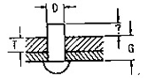
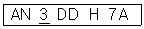
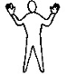
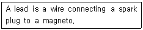
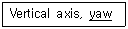
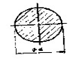
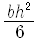
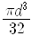
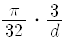
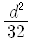

항공기체정비기능사 (2007-04-01 기출문제)
1과목: 비행원리
1. 입구 단면적 10cm2, 출구 단면적20cm2 인 관의 입구에서, 속도가 12m/s인 경우 출구에서의 속도는 몇 m/s 인가? (단, 유체는 비압축성 유체다.)
- 5 m/s
- 6 m/s
- 7 m/s
- 8 m/s
(정답률: 82%)

2. 균일한 속도로 빠르게 흐르는 공기의 흐름 속에 평판의 앞전으로부터 생기는 경계층의 종류를 순서대로 맞게 배열한 것은?
- 층류 경계층 → 난류 경계층 → 천이 구역
- 난류 경계층 → 천이 구역 → 층류 경계층
- 층류 경계층 → 천이 구역 → 난류 경계층
- 천이 구역 → 층류 경계층 → 난류 경계층
(정답률: 73%)
3. 활공기가 고도 1000m에서 20km 의 수평 활공 거리를 활공 할 때 양항비는 얼마인가?
- 0.⑤
- 0.2
- 20
- 50
(정답률: 52%)
4. 비행기의 속도가 200km/h이다. 상승각이 6° 이면 상승률은 약 몇 km/h 인가?
- 12.4
- 18.7
- 20.9
- 60.2
(정답률: 21%)
5. 천음속으로 수평 비행하는 비행기가 비행속도를 무리하게 증가시키면 날개가 이상 진동을 하는 현상이 발생되는데 이것을 무엇이라 하는가?
- 버피팅
- 턱언더
- 피치업
- 트리밍
(정답률: 80%)
6. 비행기가 고속에서 기수내림 모멘트가 커질수록 나타나는 조종력의 역작용은 조종사에 의해 수정하기 어렵기 때문에 이러한 현상을 자동적으로 수정할 수 있도록 제트기 수송기에 설치되는 것은?
- 플랩
- 마하 트리머
- 보조 동력장치
- 팬 리버서
(정답률: 73%)
7. 헬리콥터 리드-래그 힌지를 장착하는 가장 큰 목적은?
- 정적인 균형을 유지하기 위하여
- 동적인 불균형을 제거하기 위하여
- 기하학적 불평형을 제거하기 위하여
- 회전날개 깃끝에 발생되는 굽힘모멘트를 제거하기 위해여
(정답률: 56%)
8. 대기권에서 열권 위에 존재하는 층은?
- 성층권
- 극외권
- 중간권
- 대류권
(정답률: 91%)
9. 프로펠러 비행기에서 제동마력(BHP)이 250 PS 이고, 프로펠러 효율이 0.78이면 이용마력은 얼마인가?
- 140 PS
- 195 PS
- 200 PS
- 320 PS
(정답률: 67%)
10. 필요마력이 최소인 상태로 비행할 때의 속도는?
- 경제속도
- 설계속도
- 종극속도
- 한계속도
(정답률: 81%)
11. 비행기 정적 세로안정을 가장 올바르게 설명한 것은?
- 받음각의 변화에 의해 발생한 키놀이 모멘트가 비행기를 원래의 평형 된 받음각 상태로 돌아가는 것이다.
- 도움날개의 변화에 의해 발생한 키놀이 모멘트가 비행기를 원래의 평형 된 상태로 돌아가는 것이다.
- 받음각의 변화에 의해 발생한 빗놀이 모멘트가 비행기를 원래의 평형 된 받음각 상태로 돌아가는 것이다.
- 받음각의 변화에 의해 발생한 옆놀이 모멘트가 비행기를 원래의 평형 된 받음각 상태로 돌아가는 것이다.
(정답률: 50%)
12. 다음 중 뒷전 플랩의 종류가 아닌 것은?
- 단순 플랩
- 스플릿 플랩
- 슬롯 플랩
- 크루거 플랩
(정답률: 65%)
13. 트림 태브 에 대한 설명으로 가장 올바른 것은?
- 조종석의 조종 장치와 직접 연결되어, 태브만 작동 시켜서 조종면이 움직이도록 설계된 것으로서 주로 대형 비행기에 사용된다.
- 조종면이 움직이는 방향과 반대방향으로 움직이도록 기계적으로 연결되어 있으면, 태브가 위쪽으로 올라가면 태브에 작용하는 공기력 때문에 조종면이 반대방행으로 움직여서 내려오게 된다.
- 스프링을 설치하여 태브의 작용을 배가시키도록 장치이다
- 조종면의 힌지 모멘트를 감소시켜서 조종사의 조종력을 0으로 조종해 주는 역할을 하며, 조종석에서 그 위치를 조절할 수 있도록 되어 있다.
(정답률: 44%)
14. 작용과 반작용의 법칙을 이용하여 헬리콥터의 회전날개에 의해서 만들어지는 회전면에서의 운동량의 차이를 이용하여 추력을 구하는 이론은?
- 회전면 이론
- 추력 이론
- 운동량 이론
- 날개 이론
(정답률: 59%)
15. 다음 중에서 음속에 가장 영향을 미치는 요인은?
- 압력
- 밀도
- 공기성분구성
- 온도
(정답률: 81%)
16. 기체의 정시 점검에 속하지 않는 것은?
- A 점검
- B 점검
- 내부구조검사
- 비행 전 점검
(정답률: 47%)
17. 리벳 할 판재 중 두꺼운 판재의 두께를 T 라 할 때 사용하여야 할 리벳의 직경은 3T 이며, 양판의 두께를 B 라고 할 경우 일반적으로 머리성형을 하기 위한 가장 알맞은 돌출 길이(X)는?

- 1 1/2 D
- 3 1/2 D
- 4 1/2 D
- 7 1/2 D
(정답률: 35%)
18. 판재의 두께가 0.⑤1인치이고 판재의 굽힘 반지름이 0.125 인치 일 때, 90° 구부릴 때에 생기는 세트백은 얼마인가?
- 0.074 in
- 0.176 in
- 1.45 in
- 2.45 in
(정답률: 70%)
19. 다음의 항공기용 AN볼트의 규격 표시에서 3의 숫자는 무엇을 의미하는가?

- 볼트의 길이가 3/8
- 볼트의 나사산이 3×16개
- 볼트의 지름이 3/16 인치
- 볼트의 그리프 길이가 3인치
(정답률: 65%)
20. 부품의 손상형태에서 깊게 긁힌 형태로 표면이 예리한 물체와 닿았을 때 생기는 것을 무엇이라 하는가?
- 균열
- 가우징
- 스코어
- 용착
(정답률: 52%)
2과목: 항공기정비
21. 육안검사용 장비가 아닌 것은?
- 확대경
- 검사용 거울
- 플래쉬 라이트
- 블랙 라이트
(정답률: 79%)
22. 산소취급시에 주의해야 할 사항으로 가장 관계가 먼 내용은?
- 취급시 오일이나 그리이스 등을 콕크에 사용하여 작업이 용이하게 해야 한다.
- 액체산소 취급시 동상 예방을 위해 장갑, 앞치마 및 고무장화 등을 착용한다.
- 산소를 보급하거나 취급시 환기가 잘 되도록 한다.
- 화재에 대비해 소화기를 항상 비치하고 15m 이내 흡연이나 인화성 물질취급을 금한다.
(정답률: 64%)
23. 금속 자체에서 일어나는 화재로서 항공기 표피에 빨갛게 일어나는 현상의 화재는?
- A급 화재
- B급 화재
- C급 화재
- D급 화재
(정답률: 76%)
24. 항공기의 표준 유도신호 중 그림과 같은 신호는 무엇을 뜻하는가?

- 전진
- 정지
- 촉굄
- 촉 제거
(정답률: 67%)
25. 다음 영문의 내용으로 가장 올바른 것은?

- 점화 플러그는 마그네토를 연결하는 선이다.
- 도선은 점화 플러그와 마그네토를 연결하는 선이다.
- 마그네토는 점화 플러그에 의해 작동된다.
- 처음 작동의 연결은 축전지와 마그네토 플러그에 연결된 도선에 의한다.
(정답률: 77%)
26. 다음 문장 중에서 밑줄 친 부분은 무슨 뜻인가?

- 키놀이
- 옆놀이
- 선회
- 빗놀이
(정답률: 73%)
27. 와전류탐상검사의 특징에 대한 설명 중 가장 관계가 먼 내용은?
- 검사표면으로부터 깊은 곳의 검사가 곤란하다.
- 형상이 간단한 검사물은 고속 자동화 시험이 가능하다.
- 표면 결함에 대한 검출감도가 좋다.
- 투과된 사진상으로 보게 되므로 직관성이 있다.
(정답률: 51%)
28. 볼트나 너트의 육면 중에 2면 만이 공구의 개구 부분에 걸려서 그 볼트나 너트를 장탈착 하는데 쓰이는 공구는 무엇인가?
- 박스 렌치
- 오픈 엔드 렌치
- 스트랩 렌치
- 소켓 렌치
(정답률: 78%)
29. 다이얼 타입이라고도 하며 토크가 걸리면 다이얼에 토크값이 지시되는 렌치는?
- 프리셋 토크 드라이버 렌치
- 리지드 프레임 토크 렌치
- 디플렉팅 빔 토크 렌치
- 소켓 렌치
(정답률: 53%)
30. 항공기 정비기술기시와 관계가 없는 것은?
- 감항성 개선 명령
- 정비지원 기술정보
- 시한성 기술 지시
- 작동 기술 정보
(정답률: 47%)
31. 불안전한 상태에서 발생되는 사고 원인으로 가장 관계가 먼 것은?
- 작업 상태의 불량
- 불안전한 습관
- 건물 상태의 불안전
- 정돈 불량
(정답률: 52%)
32. 금속튜브의 호칭 치수를 가장 올바르게 표기한 것은?
- 바깥지름 X 안지름 X 두께
- 두께 X 안지름 X 바깥지름
- 바깥지름 X 두께
- 안지름 X 두께
(정답률: 61%)
33. 항공기 급유 및 배유 시에는 반드시 3점 접지를 하는데 다음 중 3점 접지에 해당되지 않는 것은?
- 항공기와 연료차
- 항공기와 지면
- 연료차와 지면
- 건물과 항공기
(정답률: 88%)
34. 다음의 측정기기 중 비교측정기는 어느 것인가?
- 다이얼 게이지
- 마이크로 메타
- 버니어 켈리퍼스
- 강철자
(정답률: 55%)
35. 항공기가 발착하는 지점으로 출발기지 중도 기항기지 종착기지 및 반환기지 등으로 분류되는 기체 정비 방식에 관한 용어는?
- 기지
- 모기지
- 운항 정비 기지
- 운항 정비 모기지
(정답률: 33%)
36. I 자형 날개 보에 작용하는 주요 하중에서 비행 중 압축 응력이 발생되는 부분은?
- 아랫면 플렌지
- 윗면 플렌지
- 웨이브
- 구조재
(정답률: 53%)
37. 열가소성 수지로서 가공이 용이하고 기계적 성질이 뛰어나며 또한 열에 대한 안정하여 약 290〫〫℃ 정도의 온도에서 사용할 수 있는 장점을 지닌 모재 수지는?
- 에폭시 수지
- 폴리에테르 에테르케톤 수지
- 폴리아미드 수지
- 불포화 폴리에스테르 수지
(정답률: 46%)
38. 항공용 타이어 구조에서 타이어의 마멸을 측정하고 제동 효과를 주는 곳은?
- trread 의 홈
- breaker
- core body
- chafer 간격
(정답률: 60%)
39. 미국 재료시험협회에서 정한 질별 기호 중 풀림처리를 나타낸 것은?
- 0
- H
- F
- W
(정답률: 73%)
40. 항공기의 무게 측정 작업에서 사용하는 용어 중 측정 장비 무게를 무엇이라 하는가?
- 자기무게
- 무효무게
- 영 무게
- 테어무게
(정답률: 44%)
3과목: 항공기체
41. 헬리콥터 동체의 구조형식 중에서 링, 정형제 벌크헤드의 수직 구조부재와 세로대의 수평구조 부재로 만들어지며, 이 위에다 외피를 씌운 형태의 구조는?
- 트러스 구조
- 세미모노코크형 구조
- 모노코크형 구조
- 박스형 구조
(정답률: 60%)
42. 헬리콥터의 주 회전날개 깃의 피치각이 같을 때 양력의 불균형으로 인해 회전날개가 위아래로 움직이게 되는데, 이것을 무엇이라 하는가?
- 플래핑 운동
- 코리올리스 효과
- 리드-래그 운동
- 페더링 효과
(정답률: 71%)
43. 하중배수 선도에 대한 설명 중 가장 관계가 먼 내용은?
- 항공기의 속도를 세로축에 두고 하중배수를 가로축으로 하여 그려진 선도이다.
- 구조역학적으로 항공기의 안전한 비행 범위를 정하여 준다.
- V-N 선도라 한다.
- V-G 선도라 한다.
(정답률: 29%)
44. 다음 그림과 같은 응력-변형률 선도에서 보통 기체역학적으로 인장강도라고 생각되는 점은?(문제 복원 오류로 그림파일이 없습니다. 정답은 4번입니다.)
- A
- B
- C
- D
(정답률: 81%)
45. 직경 5cm 인 원형 단면봉에 1000kgf의 인장 하중이 작용 할 때 단면적에서의 인장응력은 약 몇 kgf/cm2 인가?
- 25.5
- 40.2
- 50.9
- 61.9
(정답률: 60%)
46. 보의 휨 응력을 계산시 단면 계수(Z)가 적용 된다. 단면의 직경이 d인 원의 단면 계수 (Z) 값은?





(정답률: 57%)
47. 랜딩기어시스템에서 트라이사이클기어 배열의 아닌 것은?
- 빠른 착륙속도에서 강한 브레이크를 사용할 수 있다.
- 이륙이나 착륙 중 조종사에게 좋은 시야를 제공한다.
- 항공기의 그라운드 루핑을 방지한다.
- 이륙, 착륙 중에 테일 휠의 진동을 방지한다.
(정답률: 39%)
48. 헬리콥터의 동력구동장치 중 기관에서 전달 받은 구동력을 회전수와 회전방향을 변환 시킨 후에 각 구동축으로 전달하는 장치는?
- 변속기
- 동력 구동축
- 중간 기어 박스
- 꼬리 기어 박스
(정답률: 58%)
49. 헬리콥터의 구조 중 수평안정판과 꼬리회전 날개가 부착 되는 부분은?
- 파일론
- 회전 날개 헤드
- 테일붐
- 동체
(정답률: 30%)
50. 페일 세이프 구조에 속하지 않는 것은?
- 다경로 하중 구조
- 이중 구조
- 대치 구조
- 샌드위치 구조
(정답률: 71%)
51. 다음 중 항공기에 설치하는 방화벽을 가장 올바르게 설명한 것은?
- 일반적으로 왕복엔진에서의 방화벽은 구조 역학적으로 벌크헤드의 역할도 한다.
- 일반적으로 왕복엔진에서는 엔진 마운트가 방화벽의 역할을 한다.
- 일반적으로 가스터빈엔진에서는 카울링이 방화벽의 역할도 한다.
- 일반적으로 가스터빈엔진에서의 방화벽은 엔진의 일부로 구성되어 있다.
(정답률: 45%)
52. 재료를 일정 시간 가열한 후에 물, 기름 등 에서 급속히 냉각시키는 열처리로서 재료를 경화시켜서 강도를 증가 시키는 열처리법은?
- 담금질
- 템퍼링
- 노멀라이징
- 어닐링
(정답률: 86%)
53. 마그네슘과 그 합금이 갖는 일반적인 성질로 가장 거리가 먼 내용은?
- 순수마그네슘 가루는 공기 중에서 발화하기가 쉽다.
- 염분에 대하여 부식이 심하며 냉간가공이 불가능 하다
- 비강도가 매우 작으므로 경합금 재료로 적합하다.
- 순수 마그네슘의 비중은 1.74 정도이며 실용 금속 중에서 가장 가볍다.
(정답률: 30%)
54. 폴리메타크릴산메탈의 약칭으로 불리기도 하는데 투명도가 우수하고, 가볍고 강인하여 항공기 차문이나 객실 내부의 장식품 등에 사용되는 수지는?
- 아크릴 수지
- 페놀 수지
- 에폭시 수지
- 폴리 염화 비닐 수지
(정답률: 50%)
55. 일반적으로 항공기 기체구조의 설계에서 안전계수는 약 얼마 정도를 주는가?
- 1
- 1.5
- 2
- 2.5
(정답률: 57%)
56. 다음 중 피로 파괴에 대한 설명으로 가장 올바른 것은?
- 극한 하중에 의하여 재료가 파괴되는 현상
- 항복 하중 이상인 하중에 휘어 재료가 파괴 되는 현상
- 반복 하중에 의하여 재료가 파괴되는 현상
- 재료의 불균일에 의하여 재료가 파괴되는 현상
(정답률: 82%)
57. 날개의 휨 강도나 비틀림 강도를 증가시켜 주는 역할을 하여 날개의 길이 방향으로 리브 주위에 배치되는 것은?
- stringer
- tab
- spar
- stressed skin
(정답률: 54%)
58. 다음 중에서 2차 조종면에 해당되는 것은?
- Aileron
- Elevator
- Flap
- Rudder
(정답률: 79%)
59. 꼬리 날개의 구성 요소가 아닌 것은?
- Vertical Stabilizer
- Horizontal Stabilizer
- Elevator
- Spoiler
(정답률: 74%)
60. 알클래드 판에 대한 설명으로 가장 올바른 것은?
- 순수 알루미늄 판에 알루미늄 합금을 약 3~5% 정도의 두께로 입힌 것이다.
- 알루미늄 합금판에 순수 알루미늄을 약 3~5% 정도의 두께로 입힌 것이다.
- 티타늄 합금판에 순수 티타늄을 약 3~5% 정도의 두께로 입힌 것이다.
- 문제 오류로 보기가 없습니다.
(정답률: 63%)
유체의 유속은 유체의 유량과 단면적의 곱으로 나타낼 수 있다. 즉, 유속 = 유량 ÷ 단면적이다.
입구에서의 유속은 12m/s 이므로, 입구에서의 유량은 10cm2 × 12m/s = 120cm3/s 이다.
출구에서의 유속은 출구에서의 유량을 출구의 단면적으로 나눈 값이다. 출구에서의 유량은 입구에서의 유량과 동일하므로, 출구에서의 유속은 120cm3/s ÷ 20cm2 = 6cm/s 이다.
하지만, 문제에서 답을 m/s 단위로 요구하고 있으므로, 6cm/s를 0.06m/s로 변환하면, 출구에서의 속도는 6m/s가 된다. 따라서, 정답은 "6 m/s"이다.